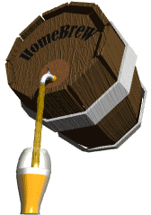

back to Paul's Poetry Page
back to Paul's Poetry Page|
most of the time when you combine a randomly selected set of ingredients you get a mess! there's nothing scientific about it. on the other hand there are those rare occasions when the ingredients seemingly find one another combining instinctively with purpose and forethought such that the whole is infinitely greater than the sum of its parts. the end result is as refreshing as it is intoxicating ideal in times of celebration as well as quiet reflection. this - and nothing else - is the true Holy Grail. here, therefore, is a toast: may your yields be high may your carmelization be minimal and may your tap may never run dry.
|
 |
back to Paul's Poetry Page